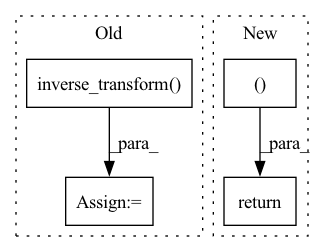

Pattern ID :15427

Before Change
confidence[:, task:task + 1] = avg_test_var
predictions = self.scaler.inverse_transform(predictions)
confidence = (self.scaler.inverse_transform(predictions +
confidence) -
self.scaler.inverse_transform(predictions -
confidence))/2
return predictions, confidence
After Change
confidence[:, task:task + 1] = np.sqrt(avg_test_var)
predictions = self.scaler.inverse_transform(predictions)
return predictions, self._scale_confidence(confidence)
class RandomForestEstimator(DroppingEstimator):
def compute_confidence(self, test_predictions):
In pattern: SUPERPATTERN
Frequency: 3
Non-data size: 4
Instances
Fragment ID: 52377006
Project Name: aamini/chemprop
Commit Name: 59f9255e22db612b12c615473cfe42eb0fdb7630
Time: 2019-10-01
Author: liortulip@gmail.com
File Name: chemprop/train/confidence_estimator.py
M Class Name: GaussianProcessEstimator
N Class Name: GaussianProcessEstimator
M Method Name: compute_confidence(2)
N Method Name: compute_confidence(2)
M Parent Class: DroppingEstimator
N Parent Class: DroppingEstimator
M File Name: chemprop/train/confidence_estimator.py
N File Name: chemprop/train/confidence_estimator.py
M Start Line: 106
M End Line: 143
N Start Line: 110
N End Line: 139
'>
Before Change
)
else:
// Apply denormalization
pred_durations = duration_out_scaler.inverse_transform(
max_mu.squeeze(0).cpu().data.numpy()
)
else:
// (T, D_out)
pred_durations = (
duration_model.inference(x, [x.shape[1]]).squeeze(0).cpu().data.numpy()
After Change
max_mu.squeeze(0).cpu().data.numpy()
)
return max_mu, max_sigma_sq
else:
// (T, D_out)
pred_durations = (
duration_model.inference(x, [x.shape[1]]).squeeze(0).cpu().data.numpy()
'>
Fragment ID: 52377005
Project Name: r9y9/nnsvs
Commit Name: 62d633dac20c0e1e7adb346ea1fc83685a45727d
Time: 2022-03-11
Author: zryuichi@gmail.com
File Name: nnsvs/gen.py
M Class Name: AnonimousClass
N Class Name: AnonimousClass
M Method Name: predict_duration(11)
N Method Name: predict_duration(11)
M Parent Class:
N Parent Class:
M File Name: nnsvs/gen.py
N File Name: nnsvs/gen.py
M Start Line: 281
M End Line: 304
N Start Line: 291
N End Line: 303
'>
Before Change
confidence[:, task] = avg_test_var
predictions = self.scaler.inverse_transform(predictions)
confidence = (self.scaler.inverse_transform(predictions +
confidence) -
self.scaler.inverse_transform(predictions -
confidence))/2
After Change
predictions = self.scaler.inverse_transform(predictions)
return predictions, self._scale_confidence(confidence)
class EnsembleEstimator(ConfidenceEstimator):
def __init__(self, train_data, val_data, test_data, scaler, args):
'>
Fragment ID: 52377004
Project Name: aamini/chemprop
Commit Name: 59f9255e22db612b12c615473cfe42eb0fdb7630
Time: 2019-10-01
Author: liortulip@gmail.com
File Name: chemprop/train/confidence_estimator.py
M Class Name: RandomForestEstimator
N Class Name: RandomForestEstimator
M Method Name: compute_confidence(2)
N Method Name: compute_confidence(2)
M Parent Class: DroppingEstimator
N Parent Class: DroppingEstimator
M File Name: chemprop/train/confidence_estimator.py
N File Name: chemprop/train/confidence_estimator.py
M Start Line: 161
M End Line: 171
N Start Line: 159
N End Line: 165